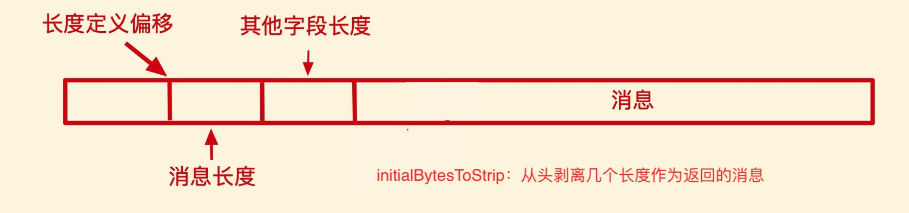

黏包
现象：发送 abc abc，接受 abcabc
原因：
- 接收方 ByteBuf 设置太大
- 接收方处理消息不及时，同时滑动窗口空余很多
- 发送方的 Nagle 算法：由于报文都需要添加报头，当发送消息很小时，也需要添加报文头，Nagle 算法可能将多个小的消息合成一个大的消息发送。
半包
现象：发送 abcabc，接受 abc abc
原因：
- 接收方 ByteBuf 设置太小
- 接收方的滑动窗口不够了，发送方只能先发一部分，收到 ack 后再发剩下的
- 链路层：MSS 限制，网卡可能对发送数据有限制，发送的数据超过限制后，会将数据切分
解决黏包
-
短链接：每发一次数据就断开连接。效率极低，也无法解决半包问题。
-
定长解码器（
FixedLengthFrameDecoder）：一个特殊的 handler，需要双方协商消息固定长度，接收时遇到半包可以等待接受，遇到黏包消息可以拆分。会造成浪费，因为不足长度的消息需要用无意义的字节填充。 -
分隔符解码器：需要指定一个最大长度。效率也不高，因为需要依次查看消息，查找分隔符。
LineBasedFrameDecoder: 换行分隔符解码器，支持\n\r\n；DelimiterFrameDecoder: 自定义分隔符解码器
-
预设长度（
LengthFeildFrameDecoder）：数据的长度约定在数据包里，消息格式为定长字节表示内容长度 + 实际内容
协议
Netty 提供了 Redis、Http 等常用协议的编解码器
-
Http：
HttpServerCodec.childHandler(new ChannelInitializer<NioSocketChannel>() { // 绑定 handle @Override protected void initChannel(NioSocketChannel channel) { channel.pipeline() .addLast(new LoggingHandler(LogLevel.DEBUG)) .addLast(new HttpServerCodec()) // 包含两个：HttpRequestDecoder, HttpResponseEncoder // 上一步解析成两个对象，请求头 DefaultHttpRequest，请求体 LastHttpContent // 这里只关心 DefaultHttpRequest .addLast(new SimpleChannelInboundHandler<DefaultHttpRequest>() { @Override protected void channelRead0(ChannelHandlerContext ctx, DefaultHttpRequest msg) throws Exception { System.out.println(msg.uri()); // 返回 byte[] bytes = "<h1>hello world!</h1>".getBytes(); DefaultFullHttpResponse response = new DefaultFullHttpResponse(msg.protocolVersion(), HttpResponseStatus.OK); // http协议版本号、状态码 response.headers().setInt(HttpHeaderNames.CONTENT_LENGTH, bytes.length); response.content().writeBytes(bytes); ctx.writeAndFlush(response); } }); }
自定义协议
可以继承 ByteToMessageCodec<Message> 或 MessageToMessageCodec<Message> 父类（区别在于是否可以被多个 EventLoop 共享），重写 encode 和 decode 方法，自己设计协议，既可以出站也可以入站。
在绑定自定义协议编解码器前，配合帧解码器 LengthFeildFrameDecoder 指明自定义协议中 length 的偏移量，防止黏包半包问题。